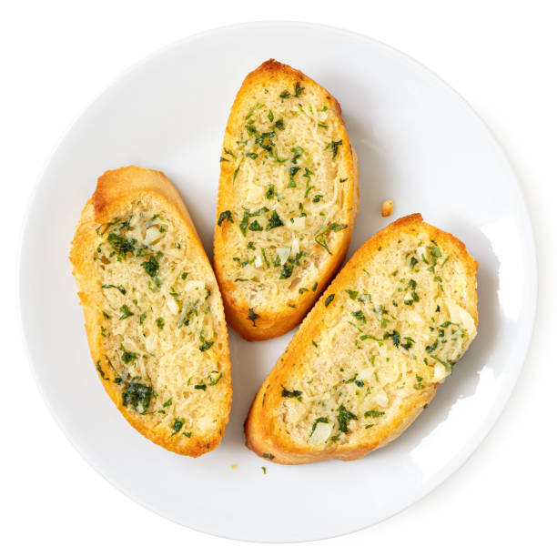

Home
Garlic Bread Recipe

Description
This homemade garlic bread recipe requires super simple ingredients, so trust me when I say you’ll back to it time and time againThis homemade garlic bread recipe requires super simple ingredients, so trust me when I say you’ll back to it time and time again
Ingredients
- Bread(1 loaf or number or slices you'd like)
- Butter(1/2 cup)
- Garlic(to your taste!)
- Herbs and Spices(fresh parsley and salt)
Steps to Follow:
- Prep your pan & bread. Line a large baking sheet with parchment paper or tinfoil, slice your bread in half lengthwise, and place the bread cut side up on the baking sheet.
- Make the garlic butter. In a small bowl mix the herbs and salt together with the softened butter. Spread it evenly over the top of the bread halves.
- Bake & serve. Bake the bread for 10-15 minutes at 425 degrees F until it’s slightly golden brown on the edges. If you’re adding cheese, add it in the last 2 minutes of baking. Then cool, slice into 1-inch pieces, and devour!